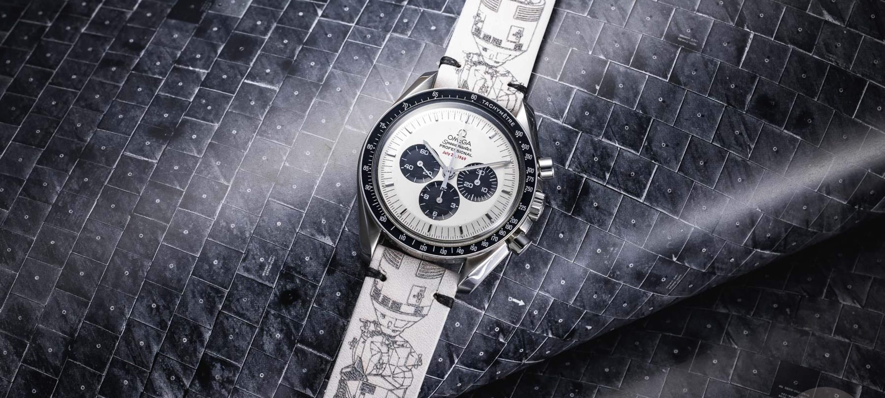
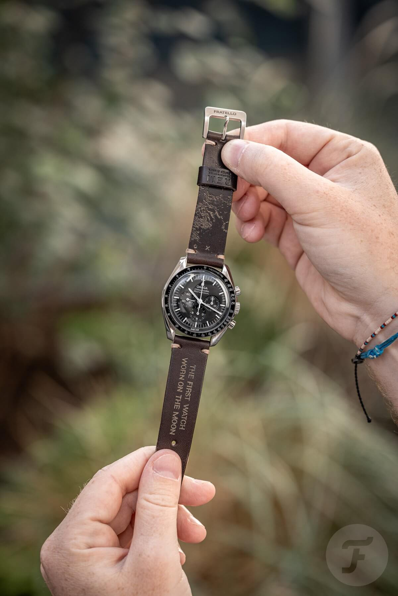
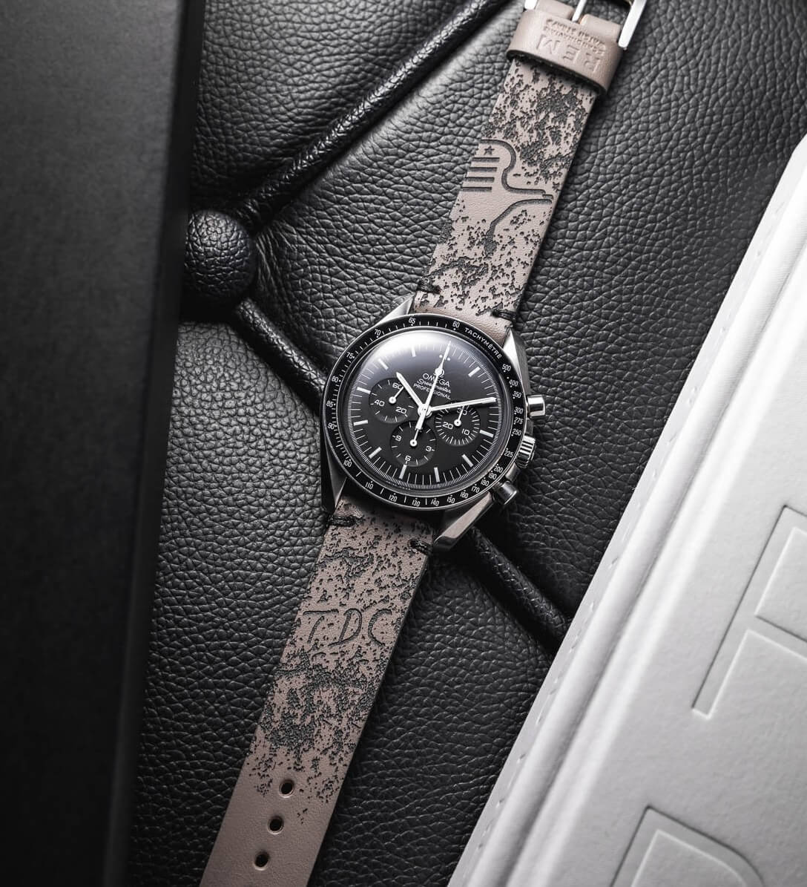
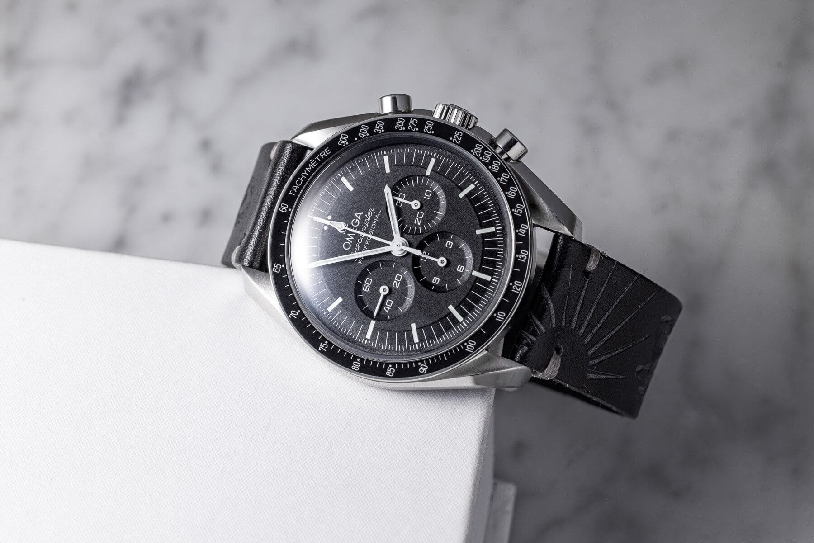
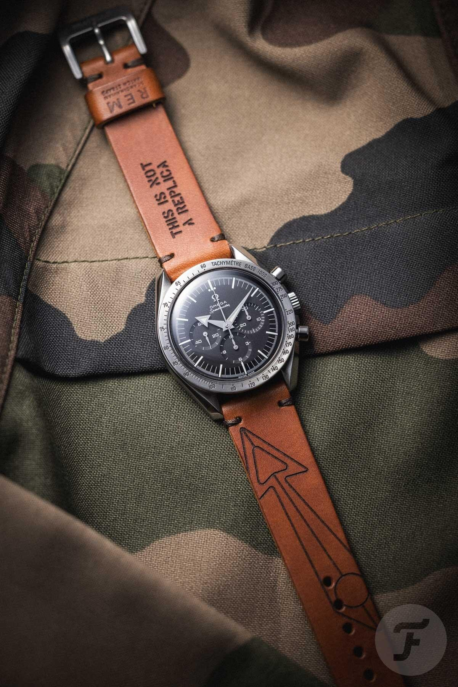
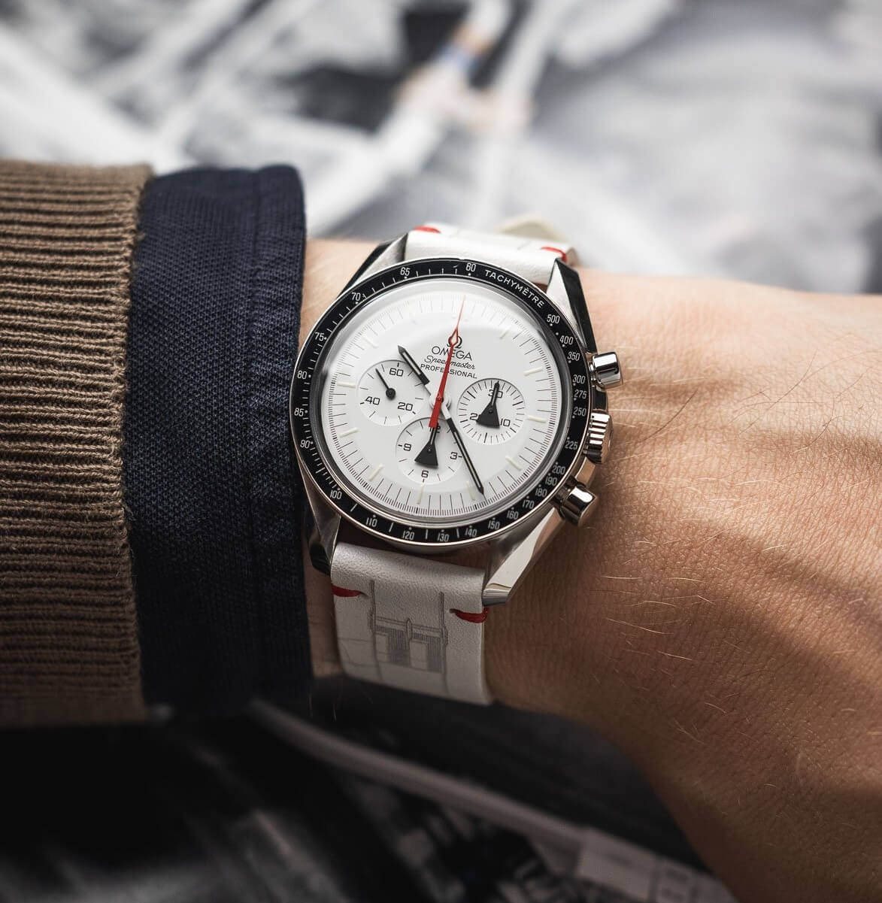
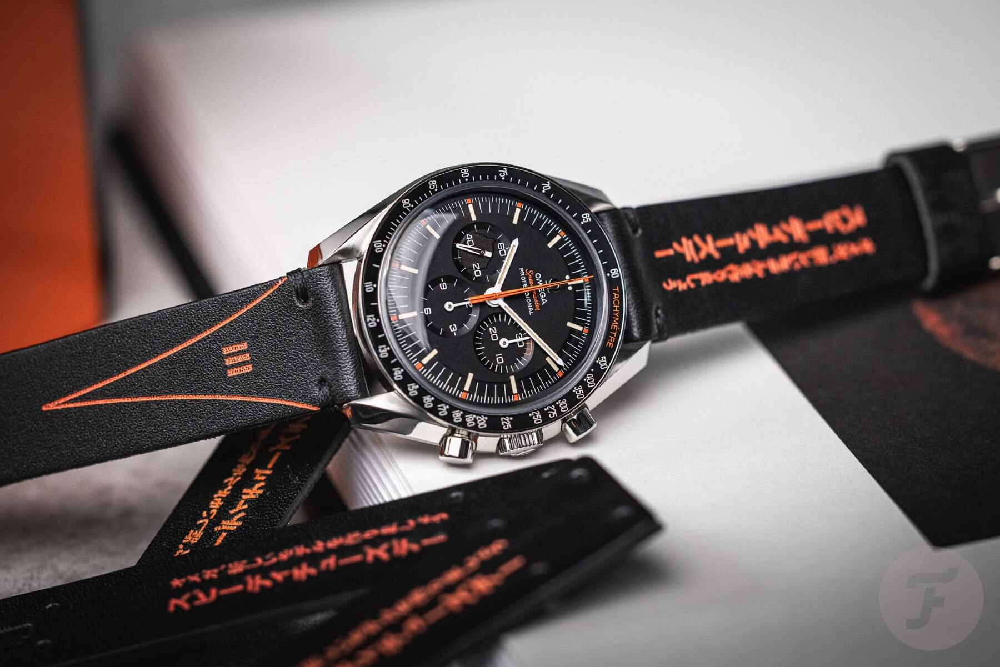
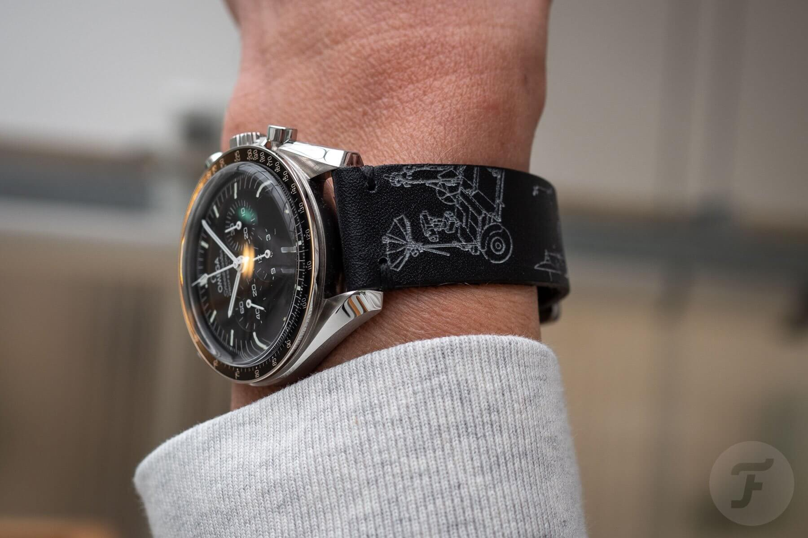

Fratello Watches x REM Straps Collaboration
Brand collaborations are everywhere. But I feel many of these partnerships and drops are driven by a fake hype that is designed to generate temporary excitement, and a false sense of scarcity. They simply lack substance. But REM Straps & Fratello partnership is different. Actually, it is pretty awesome!
 Nenad Pantelic • August 17, 2024
Nenad Pantelic • August 17, 2024

For many watch collectors the constant stream of various brand collaborations has become tiresome. Instead of feeling like a special event, each new release just looks like a marketing tactic. There is a genuine level of frustration among watch communities, in the comments of the watch publication articles, and many enthusiasts are calling these collabs a "milking of a dead cow" or a "money grab." Not a good look for brands involved.
Fratello Watches × REM Strap Collaboration
Thankfully, the partnership between REM Straps and Fratello is not your typical marketing collaboration. Instead of doing a one-time product drop for quick sales, they have built a long-term project with a loyal following by releasing new strap every month.
It so refreshing that the straps are not just about following trends, but instead, they are rooted in specific historical moments or connected to a particular watch. I am looking at you "This is not a replica" :)

This is what I love about collaborations like this one. It proves that when you build something on genuine interest and nerdy & intellectual curiosity, rather than just hype, you can create something truly authentic.
REM Straps
REM Straps was founded by two watch enthusiasts, Totte el Siddig and Roger Clementz, who met online. They combine craftsmanship and engineering to create their straps. REM Straps' motto is: "You should be able to select a strap that highlights the historical significance of your watch."
All of their products are made in Sweden using high-quality leather. Each strap is laser-engraved and hand-colored, a process that makes them different from other brands mostly focused on mass-produced accessories.
Fratello Watches
Do I need to introduce Fratello Watches? It was founded in 2004 by Robert-Jan Broer, who wanted to create an educational and entertaining platform for watch enthusiasts. The name "Fratello," which means "brother" in Italian, is also a direct translation of Broer's last name. It has grown to become a symbol for their community, a true brotherhood. I read Fratello almost daily and appreciate how they manage to create top-quality and engaging content, with a personal touch from editors like Nacho, RJ, Mike, Balasz, Jorg...
Overview of Straps Released So Far
When you look at any of the collab straps, the design is the first thing you notice.
In my opinion the design is a masterclass in storytelling. By etching motifs into the strap REM and Fratello managed to transform each strap into an educational material. This turns a cool accessory into an item that invites a deeper dive into the stories it tells. One simply wants to learn the incredible story behind each strap.
Just take a look out the edition No12, "The Last Man on the Moon."
This is my favorite strap in the collection because it commemorates a truly special moment in history. The No. 12 strap is dedicated to Eugene "Gene" Cernan, the last man to walk on the moon. Just before he climbed the ladder to leave the lunar surface for the final time on December 14th, 1972, he knelt down and wrote his daughter Tracy's initials, "TDC," in the lunar dust. This beautiful, personal gesture is a symbol of a father's love, and his tribute will remain there, preserved in the vacuum of space for thousands of years.

Without this release, I would have never learned about this story.
Let us take a look at the released versions. The table below lists the Fratello x REM straps from the provided articles, ordered numerically and by release date
| Number | Strap name | Topic |
| 1 | The Lunar Lander | Apollo 11 Lunar Module |
| 2 | The Lunar Rover | Apollo 15 Lunar Roving Vehicle |
| 3 | Speedy Tuesday Tribute to Alaska III | Omega Speedmaster "Alaska III" |
| 4 | The Moon Explorer | Apollo 17 Mission |
| 5 | Houston, We've Had A Problem | Apollo 13 Mission |
| 6 | The First Watch Worn On The Moon | First moonwalk by Buzz Aldrin |
| 8 | Speedy Tuesday 2 | Omega Speedmaster "Speedy Tuesday 2" |
| 9 | Saturn V | Saturn V Rocket |
| 10 | This Is Not A Replica | "Apollo 11" Snoopy Award |
| 11 | For The Speedmaster X-33 | Omega Speedmaster X-33 watch |
| 12 | Last Man On The Moon | Apollo 17 and Gene Cernan |
| 13 | Apollo 9 | Apollo 9 Mission |
| 14 | Apollo XIII | Apollo 13 Mission |
| 15 | Spacewalk | Extravehicular Activity (EVA) |
| 16 | Apollo 11 | Apollo 11 Mission |
| 17 | Lunar Craters | Lunar surface topography |
If you want to buy one of these straps, you can get them straight from Fratello Shop. Just go to their Fratello x REM Straps category page. Then, pick the design you like.
Let us see what they have in the pipeline for the future releases.





A Model for Doing Things Right
In a world where collaborations are often just about chasing trends and hype, the ongoing partnership between Fratello and REM is a perfect example of how to do things right. It is a success because it is built on authenticity and substance.
What I find most impressive is their commitment to the long game. Instead of doing a single product drop, they consistently release new designs, keeping the story fresh and engaging.
I really think this project deserves more recognition. Not just because it's about the straps (this is StrapHunter after all), but because it is something worth writing about in the watch world. And, let's be honest, it's a lot healthier for our wallets than trying to hunt down another hyped unobtainium watch.
Author's note: A sincere thank you to RJ for his help and for making this post a reality. This article wouldn't have been possible without his contributions.